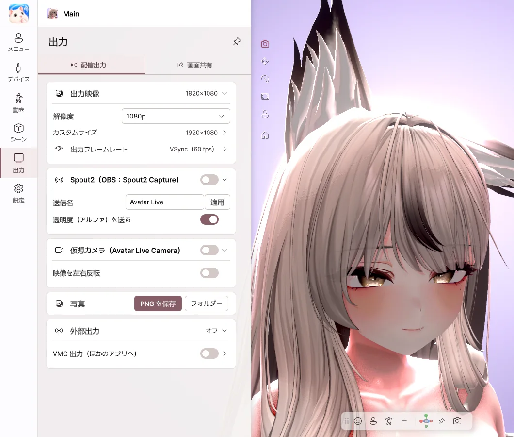

9. 出力
アバターの映像を、配信ソフトや通話アプリに送ります。
| 送り先 | 方法 |
|---|---|
| OBS（透明背景） | Spout2 |
| Discord・Zoom・Teams のカメラ | 仮想カメラ |
| Discord でのゲーム配信 | 画面共有 |
| 写真 | PNG を保存 |
配信出力

- 出力映像 — 出力する映像のサイズを選びます。
- Spout2 — オンにして、OBS で Spout2 Capture ソースを追加すると、アバターが表示されます。背景を 透明 にすると、背景なしで送れます。
- 仮想カメラ — 最初に一度だけ 仮想カメラをインストール… を押し、送り先のアプリでカメラとして Avatar Live Camera を選びます。
- 写真 — PNG を保存 で画面を保存します。UI なし・UI あり・背景だけ透明 から選べて、目線をカメラに をオンにすると、アバターがカメラを見ます。Basic と Pro のどちらでも使えます。
Discord は起動時にしかカメラを探しません。一覧にない場合は、Discord を完全に終了してから、もう一度開いてください。
Discord の画面共有

- 共有する対象 で、ゲームまたはディスプレイを選びます。
- 画面共有 をオンにします。
- Discord で 画面共有 → アプリケーション → Avatar Live Share Output を選び、サウンドをオンにします。
- フレンドにはゲームとアバターが一緒に見え、自分にはゲームだけが見えます。
- プレビューでアバターをドラッグして、位置と大きさを合わせます。
- ゲーム音 をオンにすると、ゲームの音だけをフレンドに送ります。
ゲームが黒く映る場合は、ゲームを ボーダーレスウィンドウ か ウィンドウモード に変えてみてください。Avatar Live は、管理者権限なしで実行することをおすすめします。
💡 フルスクリーン専用のゲームでは、画面共有に対応できない場合があります。その場合は OBS を通して配信してください。
外部出力（VMC）
VMC 出力 をオンにすると、アバターの動きをほかのアプリに送ります。試験的機能です。VMC で動きを 受け取る 方法は、デバイス › VMC で受け取るをご覧ください。